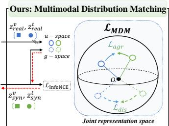

Figureure 2 · Overview of MDMFigure 2. Overview of MDM. Our MDM method consists of (i) synthetic data initialization using k-means clustering, (ii) image-text model initialization using weight-space interpolation between a pretrained and N finetuned models, and (iii) multimodal distribution matching that minimizes geodesic kernel energy between real and synthetic pairs on the unit hypersphere.这张图概括 MDM 的整体方法流程。阅读时先看模块之间传递的训练信号，再看作者如何把目标拆成可优化的子问题。

MDM: Compute Generalization Figure 1MDM: Compute Generalization Figure 1. Comparison between prior multimodal dataset distillation based on matching training trajectories (MTT, left) and our Multimodal Distribution Matching (MDM, right). While MTT replays image–text trajectories at high compute and storage cost, MDM directly matches the joint image–text distribution in the joint embedding space, yielding compact synthetic data with strong cross-architecture generalization under much lower distillation cost. The red arrow indicates the direction of gradient backpropagation.这张图概括 MDM 的整体方法流程。阅读时先看模块之间传递的训练信号，再看作者如何把目标拆成可优化的子问题。